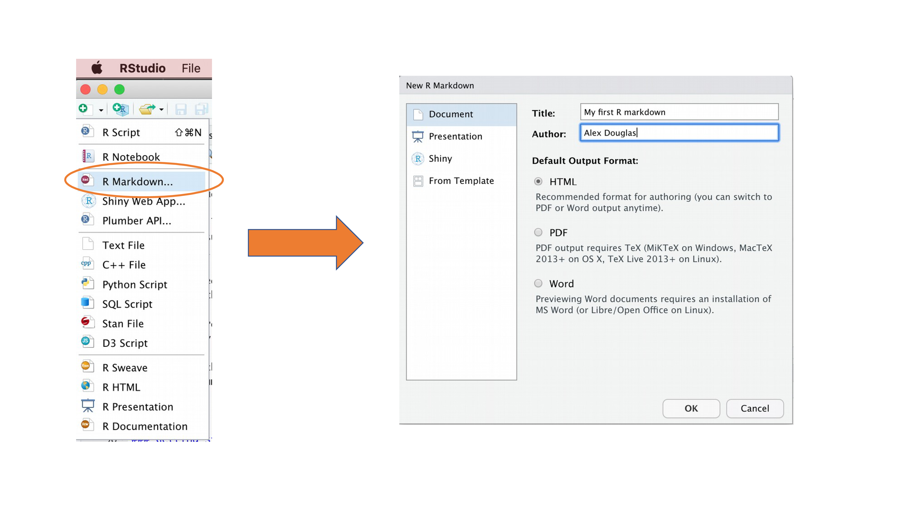
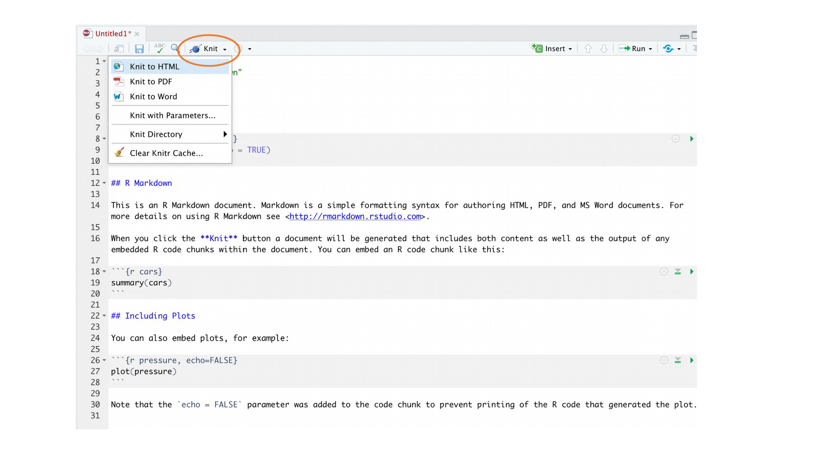
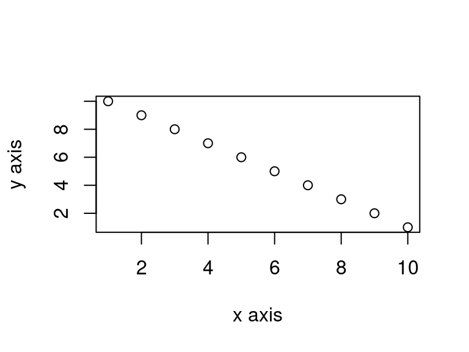
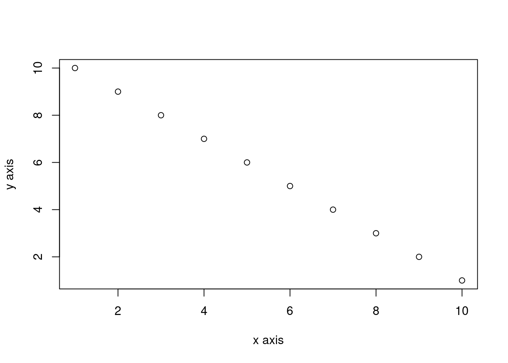

6 Reproducible reports with Quarto
Warning
screenshot are still with R markdown will be update soon
This chapter will introduce you to creating reproducible reports using R markdown / Quarto to encourage best (or better) practice to facilitate open science. It will first describe what R markdown and Quarto are and why you might want to consider using it, describe how to create a Quarto document using RStudio and then how to convert this document to a html or pdf formatted report. During this Chapter you will learn:
- the different components of a Quarto document
- how to format text, graphics and tables within the document
- how to avoid some of the common difficulties using Quarto.
6.1 What is R markdown / Quarto?
6.1.1 R Markdown
R markdown is a simple and easy to use plain text language used to combine your R code, results from your data analysis (including plots and tables) and written commentary into a single nicely formatted and reproducible document (like a report, publication, thesis chapter or a web page like this one).
Technically, R markdown is a combination of three languages, R, Markdown and YAML (yet another markup language). Both Markdown and YAML are a type of ‘markup’ language. A markup language simply provides a way of creating an easy to read plain text file which can incorporate formatted text, images, headers and links to other documents. If you’re interested you can find more information about markup languages here. Actually, you are exposed to a markup language on a daily basis, as most of the internet content you digest every day is underpinned by a markup language called HTML (Hypertext Markup Language). Anyway, the main point is that R markdown is very easy to learn (much, much easier than HTML) and when used with a good IDE (RStudio or VS Code) it’s ridiculously easy to integrate into your workflow to produce feature rich content (so why wouldn’t you?!).
6.1.2 Quarto?
Quarto is a multi-language, next generation version of R Markdown from Posit, with many new features and capabilities and is compatible not only with R but also with other language like Python and Julia. Like R Markdown, Quarto uses knitr 📦 package to execute R code, and is therefore able to render most existing .Rmd files without modification. However, it also comes with a plethora of new functionalities. More importantly, it makes it much easier to create different type of output since the coding is homogenize for specific format without having to rely on different r packages each with there own specificity (e.g bookdown, hugodown, blogdown, thesisdown, rticles, xaringan, …).
In the rest of this chapter, we will talk about Quarto but a lot can be done with R markdown. Quarto uses .qmd files while R markdown works with .Rmd but Quarto can render .Rmd files too.
6.2 Why use Quarto?
During the previous Chapters we talked a lot about conducting your research in a robust and reproducible manner to facilitate open science. In a nutshell, open science is about doing all we can to make our data, methods, results and inferences transparent and available to everyone. Some of the main tenets of open science are described here and include:
- Transparency in experimental methodology, observation, collection of data and analytical methods.
- Public availability and re-usability of scientific data
- Public accessibility and transparency of scientific communication
- Using web-based tools to facilitate scientific collaboration
By now all of you will (hopefully) be using R to explore and analyse your interesting data. As such, you’re already well along the road to making your analysis more reproducible, transparent and shareable. However, perhaps your current workflow looks something like this:
Your data is imported from your favourite spreadsheet software into R, you write your R code to explore and analyse your data, you save plots as external files, copy tables of analysis output and then manually combine all of this and your written prose into a single MS Word document (maybe for a paper or thesis chapter). Whilst there is nothing particularly wrong with this approach (and it’s certainly better than using point and click software to analyse your data) there are some limitations:
It’s not particularly reproducible. Because this workflow separates your R code from the final document there are multiple opportunities for undocumented decisions to be made (which plots did you use? what analysis did/didn’t you include? etc).
It’s inefficient. If you need to go back and change something (create a new plot or update your analysis etc) you will need to create or amend multiple documents increasing the risk of mistakes creeping into your workflow.
It’s difficult to maintain. If your analysis changes you again need to update multiple files and documents.
It can be difficult to decide what to share with others. Do you share all of your code (initial data exploration, model validation etc) or just the code specific to your final document? It’s quite a common (and bad!) practice for researchers to maintain two R scripts, one used for the actual analysis and one to share with the final paper or thesis chapter. This can be both time consuming and confusing and should be avoided.
Perhaps a more efficient and robust workflow would look something like this:

Your data is imported into R as before but this time all of the R code you used to analyse your data, produce your plots and your written text (Introduction, Materials and Methods, Discussion etc) is contained within a single Quarto document which is then used (along with your data) to automatically create your final document. This is exactly what Quarto allows you to do.
Some of the advantages of using Quarto include:
Explicitly links your data with your R code and output creating a fully reproducible workflow. ALL of the R code used to explore, summarise and analyse your data can be included in a single easy to read document. You can decide what to include in your final document (as you will learn below) but all of your R code can be included in the Quarto document.
You can create a wide variety of output formats (pdf, html web pages, MS Word and many others) from a single Quarto document which enhances both collaboration and communication.
Enhances transparency of your research. Your data and Quarto file can be included with your publication or thesis chapter as supplementary material or hosted on a GitHub repository (see Chapter 7).
Increases the efficiency of your workflow. If you need to modify or extend your current analysis you just need to update your Quarto document and these changes will automatically be included in your final document.
6.3 Get started with Quarto
Quarto integrates really well with R Studio and VS Code, and provide both a source editor as well as a visual editor providing an experience close to your classic WYSIWYG (what you see is what you write) writing software (e.g. Microsoft Word or LibreOffice writer)
6.3.1 Installation
To use Quarto you will first need to install the Quarto software and the quarto 📦 package (with its dependencies). You can find instructions on how to do this in Section 1.1.1 and on the Quarto website. If you would like to create pdf documents (or MS Word documents) from your Quarto file you will also need to install a version of \(\LaTeX\) on your computer. If you’ve not installed \(\LaTeX\) before, we recommend that you install TinyTeX. Again, instructions on how to do this can be found at Section 1.1.1.
6.3.2 Create a Quarto document, .qmd
Right, time to create your first Quarto document. Within RStudio, click on the menu File -> New File -> Quarto.... In the pop up window, give the document a ‘Title’ and enter the ‘Author’ information (your name) and select HTML as the default output. We can change all of this later so don’t worry about it for the moment.

You will notice that when your new Quarto document is created it includes some example Quarto code. Normally you would just highlight and delete everything in the document except the information at the top between the --- delimiters (this is called the YAML header which we will discuss in a bit) and then start writing your own code. However, just for now we will use this document to practice converting Quarto to both html and pdf formats and check everything is working.

Once you’ve created your Quarto document it’s good practice to save this file somewhere convenient (Section 1.4 and Figure 1.11). You can do this by selecting File -> Save from RStudio menu (or use the keyboard shortcut ctrl + s on Windows or cmd + s on a Mac) and enter an appropriate file name (maybe call it my_first_quarto). Notice the file extension of your new Quarto file is .qmd.
Now, to convert your .qmd file to a HTML document click on the little black triangle next to the Knit icon at the top of the source window and select knit to HTML

RStudio will now ‘knit’ (or render) your .qmd file into a HTML file. Notice that there is a new Quarto tab in your console window which provides you with information on the rendering process and will also display any errors if something goes wrong.
If everything went smoothly a new HTML file will have been created and saved in the same directory as your .qmd file (ours will be called my_first_quarto.html). To view this document simply double click on the file to open in a browser (like Chrome or Firefox) to display the rendered content. RStudio will also display a preview of the rendered file in a new window for you to check out (your window might look slightly different if you’re using a Windows computer).

Great, you’ve just rendered your first Quarto document. If you want to knit your .qmd file to a pdf document then all you need to do is choose knit to PDF instead of knit to HTML when you click on the knit icon. This will create a file called my_first_quarto.pdf which you can double click to open. Give it a go!
You can also knit an .qmd file using the command line in the console rather than by clicking on the knit icon. To do this, just use the quarto_render() function from the quarto 📦 package as shown below. Again, you can change the output format using the output_format = argument as well as many other options.
library(quarto)
quarto_render('my_first_quarto.qmd', output_format = 'html_document')
# alternatively if you don't want to load the quarto package
quarto::quarto_render('my_first_quarto.Rmd', output_format = 'html_document')6.4 Quarto document (.qmd) anatomy
OK, now that you can render a Quarto file in RStudio into both HTML and pdf formats let’s take a closer look at the different components of a typical Quarto document. Normally each Quarto document is composed of 3 main components:
- a YAML header
- formatted text
- code chunks.

6.4.1 YAML header
YAML stands for ‘YAML Ain’t Markup Language’ (it’s an ‘in’ joke!) and this optional component contains the metadata and options for the entire document such as the author name, date, output format, etc. The YAML header is surrounded before and after by a --- on its own line. In RStudio a minimal YAML header is automatically created for you when you create a new Quarto document as we did above (Section 6.3.2) but you can change this any time. A simple YAML header may look something like this:
---
title: My first Quarto document
author: Jane Doe
date: March 01, 2020
format: html
---In the YAML header above the output format is set to HTML. If you would like to change the output to pdf format then you can change it from format: html to format: pdf (you can also set more than one output format if you like). You can also change the default font and font size for the whole document and even include fancy options such as a table of contents and inline references and a bibliography. If you want to explore the plethora of other options see here. Just a note of caution, many of the options you can specify in the YAML header will work with both HTML and pdf formatted documents, but not all. If you need multiple output formats for your Quarto document check whether your YAML options are compatible between these formats. Also, indentation in the YAML header has a meaning, so be careful when aligning text. For example, if you want to include a table of contents you would modify the output: field in the YAML header as follows
---
title: My first Quarto document
author: Bob Hette
date: March 01, 2020
format:
html:
toc: true
---6.4.2 Formatted text
As mentioned above, one of the great things about Quarto is that you don’t need to rely on your word processor to bring your R code, analysis and writing together. Quarto is able to render (almost) all of the text formatting that you are likely to need such as italics, bold, strike-through, super and subscript as well as bulleted and numbered lists, headers and footers, images, links to other documents or web pages and also equations. However, in contrast to your familiar What-You-See-Is-What-You-Get (WYSIWYG) word processing software you don’t see the final formatted text in your Quarto document (as you would in MS Word), rather you need to ‘markup’ the formatting in your text ready to be rendered in your output document. At first, this might seem like a right pain in the proverbial but it’s actually very easy to do and also has many advantages (do you find yourself spending more time on making your text look pretty in MS Word rather than writing good content?!).
Here is an example of marking up text formatting in an Quarto document
#### Tadpole sediment experiment
These data were obtained from a mesocosm experiment which aimed to examine the
effect of bullfrog tadpoles (*Lithobates catesbeianus*) biomass on sediment
nutrient (NH~4~, NO~3~ and PO~3~) release.
At the start of the experiment 15 replicate mesocosms were filled with
20 cm^2^ of **homogenised** marine sediment and assigned to one of five
tadpole biomass treatments.which would look like this in the final rendered document (can you spot the markups?)
Tadpole sediment experiment
These data were obtained from a mesocosm experiment which aimed to examine the effect of bullfrog tadpoles (Lithobates catesbeianus) biomass on sediment nutrient (NH4, NO3 and PO3) release. At the start of the experiment 15 replicate mesocosms were filled with 20 cm2 of homogenised marine sediment and assigned to one of five tadpole biomass treatments.
Emphasis
Some of the most common markdown syntax for providing emphasis and formatting text is given below.
| Goal | Quarto | output |
|---|---|---|
| bold text | **mytext** |
mytext |
| italic text | *mytext* |
mytext |
| strikethrough | ~~mytext~~ |
|
| superscript | mytext^2^ |
mytext2 |
| subscript | mytext~2~ |
mytext2 |
Interestingly there is no underline in R markdown syntax by default, for more or less esoteric reasons (e.g. an underline is considered a stylistic element (there may well be other reasons)). Quarto fixed that problem, you can simply do [text to underline]{.underline} to underline your text.
White space and line breaks
One of the things that can be confusing for new users of markdown is the use of spaces and carriage returns (the enter key on your keyboard). In markdown, multiple spaces within the text are generally ignored as are carriage returns. For example this markdown text
These data were obtained from a
mesocosm experiment which aimed to examine the
effect
of bullfrog tadpoles (*Lithobates catesbeianus*) biomass.will be rendered as
These data were obtained from a mesocosm experiment which aimed to examine the effect of bullfrog tadpoles (Lithobates catesbeianus) biomass.
This is generally a good thing (no more random multiple spaces in your text). If you want your text to start on a new line then you can simply add two blank spaces at the end of the preceding line
These data were obtained from a
mesocosm experiment which aimed to examine the
effect bullfrog tadpoles (Lithobates catesbeianus) biomass.
If you really want multiple spaces within your text then you can use the Non breaking space tag
These data were obtained from a
mesocosm experiment which aimed to examine the
effect bullfrog tadpoles (*Lithobates catesbeianus*) biomass.These data were obtained from a
mesocosm experiment which aimed to examine the
effect bullfrog tadpoles (Lithobates catesbeianus) biomass.
Headings
You can add headings and subheadings to your Quarto document by using the # symbol at the beginning of the line. You can decrease the size of the headings by simply adding more # symbols. For example
# Header 1
## Header 2
### Header 3
#### Header 4
##### Header 5
###### Header 6results in headings in decreasing size order
Header 1
Header 2
Header 3
Header 4
Header 5
Header 6
Lists
If you want to create a bullet point list of text you can format an unordered list with sub items. Notice that the sub-items need to be indented.
- item 1
- item 2
+ sub-item 2
+ sub-item 3
- item 3
- item 4
- item 1
- item 2
- sub-item 2
- sub-item 3
- item 3
- item 4
If you need an ordered list
1. item 1
1. item 2
+ sub-item 2
+ sub-item 3
1. item 3
1. item 4
- item 1
- item 2
- sub-item 2
- sub-item 3
- item 3
- item 4
Links
In addition to images you can also include links to webpages or other links in your document. Use the following syntax to create a clickable link to an existing webpage. The link text goes between the square brackets and the URL for the webpage between the round brackets immediately after.
You can include a text for your clickable [link](https://www.worldwildlife.org)which gives you:
You can include a text for your clickable link
6.4.3 Code chunks
Now to the heart of the matter. To include R code into your Quarto document you simply place your code into a ‘code chunk’. All code chunks start and end with three backticks ```. Note, these are also known as ‘grave accents’ or ‘back quotes’ and are not the same as an apostrophe! On most keyboards you can find the backtick on the same key as tilde (~).
```{r}
Any valid R code goes here
```You can insert a code chunk by either typing the chunk delimiters ```{r} and ``` manually or use your IDE option (RStudio toolbar (the Insert button) or by clicking on the menu Code -> Insert Chunk. In VS Code you can use code snippets) Perhaps an even better way is to get familiar with the keyboard shortcuts for you IDE or code snippets.
There are a many things you can do with code chunks: you can produce text output from your analysis, create tables and figures and insert images amongst other things. Within the code chunk you can place rules and arguments between the curly brackets {} that give you control over how your code is interpreted and output is rendered. These are known as chunk options. The only mandatory chunk option is the first argument which specifies which language you’re using (r in our case but other languages are supported). Note, chunk options can be written in two ways:
- either all of your chunk options must be written between the curly brackets on one line with no line breaks
- or they can be written using a YAML notation within the code chunk using
#|notation at the beginning of the line.
We are using the YAML notation for code chunk options since we find it much easier to read when you have multiple options of long captions.
You can also specify an optional code chunk name (or label) which can be useful when trying to debug problems and when performing advanced document rendering. In the following block, we name the code chunk summary-stats, load the package ggplot2 📦, create a dataframe (dataf) with two variables x and y, use the summary() function to display some summary statistics and plot a scatterplot of the data with ggplot(). When we run the code chunk both the R code and the resulting output are displayed in the final document.
```{r, summary-stats, echo = TRUE, fig.cap = "Caption for a simple figure but making the chunk options long and hard to read"}
library(ggplot)
x <- 1:10 # create an x variable
y <- 10:1 # create a y variable
dataf <- data.frame(x = x, y = y)
summary(dataf)
ggplot(dataf, aes(x = x, y = y)) + geom_point()
``````{r}
#| label: summary-stats
#| echo: true
#| fig-cap = "Caption for a simple figure but making the chunk options long and hard to read"
x <- 1:10 # create an x variable
y <- 10:1 # create a y variable
dataf <- data.frame(x = x, y = y)
summary(dataf)
ggplot(dataf, aes(x = x, y = y)) + geom_point()
```Both will output
x <- 1:10 # create an x variable
y <- 10:1 # create a y variable
dataf <- data.frame(x = x, y = y)
summary(dataf) x y
Min. : 1.00 Min. : 1.00
1st Qu.: 3.25 1st Qu.: 3.25
Median : 5.50 Median : 5.50
Mean : 5.50 Mean : 5.50
3rd Qu.: 7.75 3rd Qu.: 7.75
Max. :10.00 Max. :10.00 ggplot(dataf, aes(x = x, y = y)) + geom_point()
When using chunk names make sure that you don’t have duplicate chunk names in your Quarto document and avoid spaces and full stops as this will cause problems when you come to knit your document (We use a - to separate words in our chunk names).
If we wanted to only display the output of our R code (just the summary statistics for example) and not the code itself in our final document we can use the chunk option echo=FALSE
```{r}
#| label: summary-stats2
#| echo: false
x <- 1:10 # create an x variable
y <- 10:1 # create a y variable
dataf <- data.frame(x = x, y = y)
summary(dataf)
``` x y
Min. : 1.00 Min. : 1.00
1st Qu.: 3.25 1st Qu.: 3.25
Median : 5.50 Median : 5.50
Mean : 5.50 Mean : 5.50
3rd Qu.: 7.75 3rd Qu.: 7.75
Max. :10.00 Max. :10.00 To display the R code but not the output use the results='hide' chunk option.
```{r}
#| label: summary-stats
#| results: 'hide'
x <- 1:10 # create an x variable
y <- 10:1 # create a y variable
dataf <- data.frame(x = x, y = y)
summary(dataf)
```x <- 1:10 # create an x variable
y <- 10:1 # create a y variable
dataf <- data.frame(x = x, y = y)
summary(dataf)Sometimes you may want to execute a code chunk without showing any output at all. You can suppress the entire output using the chunk option include: false.
```{r}
#| label: summary-stats4
#| include: false
x <- 1:10 # create an x variable
y <- 10:1 # create a y variable
dataf <- data.frame(x = x, y = y)
summary(dataf)
```There are a large number of chunk options documented here with a more condensed version here. Perhaps the most commonly used are summarised below with the default values shown.
| Chunk option | default value | Function |
|---|---|---|
| echo | echo: true |
If false, will not display the code in the final document |
| results | results: 'markup' |
If ‘hide’, will not display the code’s results in the final document. |
If ‘hold’, will delay displaying all output pieces until the end of the chunk. If ‘asis’, will pass through results without reformatting them. | | include | include: true | If false, will run the chunk but not include the chunk in the final document. | | eval | eval: true | If false, will not run the code in the code chunk. | | message | message: true | If false, will not display any messages generated by the code. | | warning | warning: true | If false, will not display any warning messages generated by the code. |
6.4.4 Inline R code
Up till now we’ve been writing and executing our R code in code chunks. Another great reason to use Quarto is that we can also include our R code directly within our text. This is known as ‘inline code’. To include your code in your Quarto text you simply write `r write your code here`. This can come in really useful when you want to include summary statistics within your text. For example, we could describe the iris dataset as follows:
Morphological characteristics (variable names:
`r names(iris)[1:4]`) were measured from
`r nrow(iris)` *Iris sp.* plants from
`r length(levels(iris$Species))` different species.
The mean Sepal length was
`r round(mean(iris$Sepal.Length), digits = 2)` mm.
which will be rendered as
Morphological characteristics (variable names: Sepal.Length, Sepal.Width, Petal.Length, Petal.Width) were measured from 150 iris plants from 3 different species. The mean Sepal length was 5.84 mm.
The great thing about including inline R code in your text is that these values will automatically be updated if your data changes.
6.4.5 Images and photos
A useful feature is the ability to embed images and links to web pages (or other documents) into your Quarto document. You can include images into your Quarto document in a number of different ways. Perhaps the simplest method is to use the Quarto markdown format:
{options}Here is an example with an image taking 75% of the width and centered.
{fig-align="center" width="75%"}resulting in:
An alternative way of including images in your document is to use the include_graphics() function from the knitr package. The following code will produce similar output.
```{r}
#| label: fig-knitr
#| fig-align: center
#| out-width: 75%
#| fig-cap: Waiting for the eclipse
knitr::include_graphics("images/markdown/eclipse_ready.jpg")
```The code above will only work if the image file (eclipse_ready.jpg) is in the right place relative to where you saved your .qmd file. In the example the image file is in a sub directory (folder) called images/markdown in the directory where we saved our my_first_quarto.qmd file. You can embed images saved in many different file types but perhaps the most common are .jpg and .png.
6.4.6 Figures
By default, figures produced by R code will be placed immediately after the code chunk they were generated from. For example:
```{r}
#| label: fig-simple-plot
#| fig-cap: A simple plot
x <- 1:10 # create an x variable
y <- 10:1 # create a y variable
dataf <- data.frame(x = x, y = y)
plot(dataf$x, dataf$y, xlab = "x axis", ylab = "y axis")
```
The fig-cap: chunk option allow to provide a figure caption recognized by Quarto and using in figure numbering and cross referencing (Section 6.4.8).
If you want to change the plot dimensions in the final document you can use the fig-width: and fig-height: chunk options (in inches!). You can also change the alignment of the figure using the fig-align: chunk option.
```{r}
#| label: fig-simple-plot2
#| fig-cap: A shrinked figure
#| fig-width: 4
#| fig-height: 3
#| fig-align: center
x <- 1:10 # create an x variable
y <- 10:1 # create a y variable
dataf <- data.frame(x = x, y = y)
plot(dataf$x, dataf$y, xlab = "x axis", ylab = "y axis")
```

You can add a figure caption using the fig-cap: option.
```{r}
#| label: fig-simple-plot-cap
#| class-source: fold-show
#| fig-cap: A simple plot
#| fig-align: center
x <- 1:10 # create an x variable
y <- 10:1 # create a y variable
dataf <- data.frame(x = x, y = y)
plot(dataf$x, dataf$y, xlab = "x axis", ylab = "y axis")
```

If you want to suppress the figure in the final document use the fig-show: 'hide' option.
```{r}
#| label: fig-simple-plot5
#| fig-show: hide
x <- 1:10 # create an x variable
y <- 10:1 # create a y variable
dataf <- data.frame(x = x, y = y)
plot(dataf$x, dataf$y, xlab = "x axis", ylab = "y axis")
```If you’re using a package like ggplot2 📦 to create your plots then don’t forget you will need to make the package available with the library() function in the code chunk (or in a preceding code chunk).
```{r}
#| label: fig-simple-ggplot
#| fig-cap: A simple ggplot
x <- 1:10 # create an x variable
y <- 10:1 # create a y variable
dataf <- data.frame(x = x, y = y)
library(ggplot2)
ggplot(dataf, aes(x = x, y = y)) +
geom_point()
```
Again, there are a large number of chunk options specific to producing plots and figures. See here for more details.
6.4.7 Tables
In Quarto, you can create tables using native markdown syntax (this doesn’t need to be in a code chunk).
| x | y |
|:---:|:---:|
| 1 | 5 |
| 2 | 4 |
| 3 | 3 |
| 4 | 2 |
| 5 | 1 |
: Caption for a simple markdown table| x | y |
|---|---|
| 1 | 5 |
| 2 | 4 |
| 3 | 3 |
| 4 | 2 |
| 5 | 1 |
The :-------: lets markdown know that the line above should be treated as a header and the lines below as the body of the table. Alignment within the table is set by the position of the :. To center align use :------:, to left align :------ and right align ------:. Whilst it can be fun(!) to create tables with raw markup it’s only practical for very small and simple tables.
The easiest way we know to include tables in an Quarto document is by using the kable() function from the knitr 📦 package. The kable() function can create tables for HTML, PDF and Word outputs.
To create a table of the first 2 rows per species of the iris data frame using the kable() function simply write
or without loading knitr 📦 but indicating where to find the kable() function.
iris %>%
group_by(Species) %>%
slice_head(n = 2) %>%
knitr::kable()| Sepal.Length | Sepal.Width | Petal.Length | Petal.Width | Species |
|---|---|---|---|---|
| 5.1 | 3.5 | 1.4 | 0.2 | setosa |
| 4.9 | 3.0 | 1.4 | 0.2 | setosa |
| 7.0 | 3.2 | 4.7 | 1.4 | versicolor |
| 6.4 | 3.2 | 4.5 | 1.5 | versicolor |
| 6.3 | 3.3 | 6.0 | 2.5 | virginica |
| 5.8 | 2.7 | 5.1 | 1.9 | virginica |
The kable() function offers plenty of options to change the formatting of the table. For example, if we want to round numeric values to one decimal place use the digits = argument. To center justify the table contents use align = 'c' and to provide custom column headings use the col.names = argument. See ?knitr::kable for more information.
iris %>%
group_by(Species) %>%
slice_head(n = 2) %>%
knitr::kable(
digits=0,
align = 'c',
col.names = c(
'Sepal length', 'Sepal width',
'Petal length', 'Petal width', 'Species'
)
)| Sepal length | Sepal width | Petal length | Petal width | Species |
|---|---|---|---|---|
| 5 | 4 | 1 | 0 | setosa |
| 5 | 3 | 1 | 0 | setosa |
| 7 | 3 | 5 | 1 | versicolor |
| 6 | 3 | 4 | 2 | versicolor |
| 6 | 3 | 6 | 2 | virginica |
| 6 | 3 | 5 | 2 | virginica |
You can further enhance the look of your kable tables using the kableExtra 📦 package (don’t forget to install the package first!). See here for more details and a helpful tutorial.
If you want even more control and customisation options for your tables take a look at the gt 📦 [package][gt]. gt is an acronym for grammar of tables and is based on similar principle for tables that are used for plots in ggplot.
iris %>%
group_by(Species) %>%
slice_head(n = 2) %>%
rename_with(~ gsub("([._])", " ", .x)) %>%
gt()| Sepal Length | Sepal Width | Petal Length | Petal Width |
|---|---|---|---|
| setosa | |||
| 5.1 | 3.5 | 1.4 | 0.2 |
| 4.9 | 3.0 | 1.4 | 0.2 |
| versicolor | |||
| 7.0 | 3.2 | 4.7 | 1.4 |
| 6.4 | 3.2 | 4.5 | 1.5 |
| virginica | |||
| 6.3 | 3.3 | 6.0 | 2.5 |
| 5.8 | 2.7 | 5.1 | 1.9 |
Within most R packages developped to produce tables, there are options to include table captions. However, if you want to add a table caption we recommend to do using the code chunk option in Quarto tbl-cap: since it will allow for cross-referencing (Section 6.4.8) and better integration in the document.
```{r}
#| label: tbl-gt-table
#| tbl-cap: A nice gt table
#| echo: true
iris %>%
group_by(Species) %>%
slice_head(n=2) %>%
rename_with(~gsub("([._])", " ", .x)) %>%
gt()
```6.4.8 Cross-referencing
Cross-references make it easier for readers to navigate your document by providing numbered references and hyperlinks to various entities like figures and tables. Once set up, tables and figures numbering happens automatically, so you don’t need to re-number all the figures when you add or delete one.
Every cross-referenceable entity requires a label (a unique identifier) prefixed with a cross-reference type e.g. #fig-element
For more details see the cross-referencing section on Quarto website.
6.4.8.1 Document sections
You can make cross-references to other sections of the document. To do so you need to:
- set up a identifier for the section you want to link to. The identifier should:
- start with #sec-
- be in lower case (Figure 6.3)
- doe not have any space, using
-instead
- use the
@symbol and the identifier to refer to the section
## Cross-referencing sections {#sec-cross-ref-sections}
[...]
As seen before(@sec-cross-ref-sections)6.4.8.2 Images, figures and tables
For tables, images and figures, in addition to the identifier the element also needs a caption for cross-referencing to work.
The prefix for tables is #tbl- and #fig- for images and figures.
Here is an example for an image included with markdown:
{#fig-cute-dog}
See @fig-cute-dog for an illustration.See Figure 6.14 for an illustration.
For figures and tables produced with R code chunks, simply provide the identifier in the label chunk option and the caption also as a chunk option.
Here is the code for a figure and a table.
```{r}
#| label: fig-cr-plot
#| fig-cap: A nice figure
x <- 1:10 # create an x variable
y <- 10:1 # create a y variable
dataf <- data.frame(x = x, y = y)
library(ggplot2)
ggplot(dataf, aes(x = x, y = y)) +
geom_point()
```
```{r}
#| label: tbl-cr-table
#| tbl-cap: A nice table
#| warning: false
library(knitr)
kable(iris[1:5,], digits=0, align = 'c', col.names = c('sepal length', 'sepal width', 'petal length', 'petal width', 'species'))
```| sepal length | sepal width | petal length | petal width | species |
|---|---|---|---|---|
| 5 | 4 | 1 | 0 | setosa |
| 5 | 3 | 1 | 0 | setosa |
| 5 | 3 | 1 | 0 | setosa |
| 5 | 3 | 2 | 0 | setosa |
| 5 | 4 | 1 | 0 | setosa |
Using cross-references, we can write:
As seen on @fig-cr-plot and @tbl-cr-table …
To get:
As seen on Figure 6.15 and Table 6.5 …
6.4.9 Citations and bibliography
To generate citations and a bibliography, Quarto requires:
- a properly formatted
.qmddocument - a bibliographic source file including all the information for the citations. It works with awide variatey of format but we suggest using BibTEX format.
- (optional) a CSL file which specifies the formatting to use when generating the citations and bibliography.
The bibliographic source and the (optional) csl file are specified in the yaml header as :
---
title: "My Document"
bibliography: references.bib
csl: ecology.csl
---6.4.9.1 Citations
Quarto uses the standard Pandoc markdown representation for citations (e.g. [@citation]) — citations go inside square brackets and are separated by semicolons. Each citation must have a key, composed of ‘@’ + the citation identifier from the database, and may optionally have a prefix, a locator, and a suffix. The citation key must begin with a letter, digit, or , and may contain alphanumerics, , and internal punctuation characters.
| Markdown Format | Output (default) |
|---|---|
Unicorns are the best [see @martin1219, pp. 33-35; also @martin2200, chap. 1] |
Unicorns are the best (see Martin 1219 pp. 33–35, also Martin 2200 chap. 1) |
Unicorns are the best [@martin2200; @martin1219] |
Unicorns are the best (Martin 1219, 2200) |
Martin says unicorns are the best [-@martin2200] |
Martin says unicorns are the best (2200) |
@martin1219 says unicorns are the best. |
Martin (1219) says unicorns are the best. |
@martin1219 [p. 33] says unicorns are the best. |
Martin (1219 p. 33) says unicorns are the best. |
6.4.9.2 Create the bibliography
By default, the list of works cited will automatically be generated and placed at the end of document if the style calls for it. It will be placed in a div with the id refs if one exists like
### Bibliography
::: {#refs}
:::For more details see the Citation page on Quarto website.
6.4.9.3 Integration with Zotero
Quarto integrates really well with Zotero if you are using the visual editor in either RStudio or VS Code.
6.5 Some tips and tricks
Problem :
When rendering my Quarto document to pdf my code runs off the edge of the page.
Solution:
Add a global_options argument at the start of your .qmd file in a code chunk:
```{r}
#| label: global_options
#| include: false
knitr::opts_chunk$set(message=FALSE, tidy.opts=list(width.cutoff=60), tidy=TRUE)
```This code chunk won’t be displayed in the final document due to the include: false argument and you should place the code chunk immediately after the YAML header to affect everything below that.
tidy.opts = list(width.cutoff = 60), tidy=TRUE defines the margin cutoff point and wraps text to the next line. Play around with this value to get it right (60-80 should be OK for most documents).
With quarto you can also put the global knitr options in a knitrblock in the YAML header (see Quarto website for details).
---
title: "My Document"
format: html
knitr:
opts_chunk:
message: false
tidy.opts: !expr 'list(width.cutoff=60)'
tidy: true
---Problem:
When I load a package in my Quarto document my rendered output contains all of the startup messages and/or warnings.
Solution:
You can load all of your packages at the start of your Quarto document in a code chunk along with setting your global options.
```{r}
#| label: global_options
#| include: false
knitr::opts_chunk$set(
message = FALSE,
warning=FALSE,
tidy.opts=list(width.cutoff=60)
)
suppressPackageStartupMessages(library(ggplot2))
```The message = FALSE and warning = FALSE arguments suppress messages and warnings. The suppressPackageStartupMessages(library(ggplot2)) will load the ggplot2 📦 package but suppress startup messages.
Problem:
When rendering my Quarto document to pdf my tables and/or figures are split over two pages.
Solution:
Add a page break using the \(\LaTeX\) \pagebreak notation before your offending table or figure
Problem:
The code in my rendered document looks ugly!
Solution:
Add the argument tidy: true to your global arguments. Sometimes, however, this can cause problems especially with correct code indentation. The best solution is to write code that looks nice (insert space and use multiple lines)
6.6 Further Information
Although we’ve covered more than enough to get you quite far using Quarto, as with most things R related, we’ve really only had time to scratch the surface. Happily, there’s a wealth of information available to you should you need to expand your knowledge and experience. A good place to start is the excellent quarto website here.
Another useful and concise Quarto reference guide can be found here
A quick and easy R Markdown cheatsheet
6.7 Practical
We will create a new Rmarkdown document and edit it using basic R and Rmarkdown functions.
6.7.1 Context
We will use the awesome palmerpenguins dataset 🧠to explore and visualize data.
These data have been collected and shared by Dr. Kristen Gorman and Palmer Station, Antarctica LTER.
The package was built by Drs Allison Horst and Alison Hill, check out the official website.
The package palmerpenguins has two datasets:
-
penguins_rawhas the raw data of penguins observations (see?penguins_rawfor more info) -
penguinsis a simplified version of the raw data (see?penguinsfor more info)
For this exercise, we’re gonna use the penguins dataset.
library(palmerpenguins)
head(penguins)# A tibble: 6 × 8
species island bill_length_mm bill_depth_mm flipper_length_mm body_mass_g
<fct> <fct> <dbl> <dbl> <int> <int>
1 Adelie Torgersen 39.1 18.7 181 3750
2 Adelie Torgersen 39.5 17.4 186 3800
3 Adelie Torgersen 40.3 18 195 3250
4 Adelie Torgersen NA NA NA NA
5 Adelie Torgersen 36.7 19.3 193 3450
6 Adelie Torgersen 39.3 20.6 190 3650
# ℹ 2 more variables: sex <fct>, year <int>6.7.2 Questions
1) Install the package palmerpenguins.
Solution
install.packages("palmerpenguins")2)
- Create a new Quarto document, name it and save it.
- Delete everything after line 12.
- Add a new section title, simple text and text in bold font.
- Compile (“Knit”).
3)
- Add a chunk in which you load the
palmerpenguins. The corresponding line of code should be hidden in the output. - Load also the
tidyversesuite of packages. Modify the defaults to suppress all messages.
Solution
```{r}
#| echo: false
#| message:false
library(palmerpenguins)
library(tidyverse)
```4) Add another chunk in which you build a table with the 10 first rows of the dataset.
Solution
```{r}
penguins %>%
slice(1:10) %>%
knitr::kable()
```5) In a new section, display how many individuals, penguins species and islands we have in the dataset. This info should appear directly in the text, you need to use inline code 😄. Calculate the mean of the (numeric) traits measured on the penguins.
Solution
## Numerical exploration
There are `r nrow(penguins)` penguins in the dataset,
and `r length(unique(penguins$species))` different species.
The data were collected in `r length(unique(penguins$island))`
islands of the Palmer archipelago in Antarctica.
The mean of all traits that were measured on the penguins are:```{r}
#| echo: false
penguins %>%
group_by(species) %>%
summarize(across(where(is.numeric), mean, na.rm = TRUE))
```6) In another section, entitled ‘Graphical exploration’, build a figure with 3 superimposed histograms, each one corresponding to the body mass of a species.
Solution
## Graphical exploration
A histogram of body mass per species:```{r}
#| fig-cap: Distribution of body mass by species of penguins
ggplot(data = penguins) +
aes(x = body_mass_g) +
geom_histogram(aes(fill = species),
alpha = 0.5,
position = "identity") +
scale_fill_manual(values = c("darkorange","purple","cyan4")) +
theme_minimal() +
labs(x = "Body mass (g)",
y = "Frequency",
title = "Penguin body mass")
```7) In another section, entitled Linear regression, fit a model of bill length as a function of body size (flipper length), body mass and sex. Obtain the output and graphically evaluate the assumptions of the model. As reminder here is how you fit a linear regression.
```{r}
model <- lm(Y ~ X1 + X2, data = data)
summary(model)
plot(model)
```
Solution
## Linear regression
And here is a nice model with graphical output```{r}
#| fig-cap: "Checking assumptions of the model"
m1 <- lm(bill_length_mm ~ flipper_length_mm + body_mass_g + sex, data = penguins)
summary(m1)
par(mfrow= c(2,2))
plot(m1)
```8) Add references manually or using citr in RStudio.
- Pick a recent publication from the researcher who shared the data, Dr Kristen Gorman. Import this publication in your favorite references manager (we use Zotero, no hard feeling), and create a bibtex reference that you will add to to the file
mabiblio.bib. - Add
bibliography: mabiblio.bibat the beginning of your R Markdown document (YAML). - Cite the reference iin the text using either typing the reference manually or using
citr. To usecitr, instal it first; if everything goes well, you should see it in the pulldown menuAddins💪. Then simply useInsert citationsin the pull-down menuAddins. - Compile.
9) Change the default citation format (Chicago style) into the The American Naturalist format. It can be found here https://www.zotero.org/styles. To do soo, add csl: the-american-naturalist.csl in the YAML.
10) Build your report in html, pdf and docx format. 🎉
Example of output
You can see an example of the Rmarkdown source file and pdf output

A. C. Davison, and D. V. Hinkley. 1997. Bootstrap methods and their
applications. Cambridge University Press, Cambridge.
Adler, D., S. T. Kelly, T. Elliott, and J. Adamson. 2024. vioplot: Violin plot.
Allaire, J., Y. Xie, C. Dervieux, J. McPherson, J. Luraschi, K. Ushey,
A. Atkins, H. Wickham, J. Cheng, W. Chang, and R. Iannone. 2024. rmarkdown: Dynamic documents for r.
Angelo Canty, and B. D. Ripley. 2024. boot:
Bootstrap r (s-plus) functions.
Banta, J. A., M. H. H. Stevens, and M. Pigliucci. 2010. A comprehensive
test of the “limiting resources†framework applied to plant
tolerance to apical meristem damage. Oikos 119:359–369.
Bartoń, K. 2024. MuMIn:
Multi-model inference.
Bates, D., M. Mächler, B. Bolker, and S. Walker. 2015. Fitting linear
mixed-effects models using lme4. Journal
of Statistical Software 67:1–48.
Bolker, B. M., M. E. Brooks, C. J. Clark, S. W. Geange, J. R. Poulsen,
M. H. H. Stevens, and J.-S. S. White. 2009. Generalized linear mixed
models: A practical guide for ecology and evolution. Trends in Ecology
and Evolution 24:127–135.
Bolker, B., and D. Robinson. 2024. broom.mixed: Tidying methods for mixed models.
Bürkner, P.-C. 2017. brms: An R package for
Bayesian multilevel models using Stan.
Journal of Statistical Software 80:1–28.
Bürkner, P.-C. 2018. Advanced
Bayesian multilevel modeling with the R
package brms. The R Journal 10:395–411.
Bürkner, P.-C. 2021. Bayesian item response
modeling in R with brms and
Stan. Journal of Statistical Software 100:1–54.
Carr, D., ported by Nicholas Lewin-Koh, M. Maechler, and contains copies
of lattice functions written by Deepayan Sarkar. 2024. hexbin: Hexagonal binning routines.
Champely, S. 2020. pwr: Basic functions for power analysis.
Chang, W., J. Cheng, J. Allaire, C. Sievert, B. Schloerke, Y. Xie, J.
Allen, J. McPherson, A. Dipert, and B. Borges. 2024. shiny: Web application framework for r.
Douglas, A. 2023. An introduction to
r.
Eddelbuettel, D. 2024. digest: Create compact hash digests of r
objects.
Elston, D. A., R. Moss, T. Boulinier, C. Arrowsmith, and X. Lambin.
2001. Analysis of aggregation, a worked example: Numbers of ticks on red
grouse chicks. Parasitology 122:563–569.
Fox, J. 2003. Effect
displays in R for generalised linear models. Journal of
Statistical Software 8:1–27.
Fox, J., and J. Hong. 2009. Effect displays in
R for multinomial and proportional-odds logit models:
Extensions to the effects package.
Journal of Statistical Software 32:1–24.
Fox, J., and S. Weisberg. 2018. Visualizing fit and lack of
fit in complex regression models with predictor effect plots and partial
residuals. Journal of Statistical Software 87:1–27.
Fox, J., and S. Weisberg. 2019a. An
R companion to applied regression. Third. Sage,
Thousand Oaks CA.
Fox, J., and S. Weisberg. 2019b. An
r companion to applied regression. 3rd edition. Sage, Thousand Oaks
CA.
Friendly, M. 2023. vcdExtra: “vcd†extensions and additions.
Gabry, J., and T. Mahr. 2024. bayesplot: Plotting for bayesian models.
Gabry, J., D. Simpson, A. Vehtari, M. Betancourt, and A. Gelman. 2019.
Visualization in bayesian
workflow. J. R. Stat. Soc. A 182:389–402.
Garbett, S. P., J. Stephens, K. Simonov, Y. Xie, Z. Dong, H. Wickham, J.
Horner, reikoch, W. Beasley, B. O’Connor, G. R. Warnes, M. Quinn, Z. N.
Kamvar, and C. Gao. 2024. yaml: Methods to convert r data to YAML and
back.
Genz, A., and F. Bretz. 2009. Computation of multivariate normal and t
probabilities. Springer-Verlag, Heidelberg.
Hadfield, J. D. 2010. MCMC
methods for multi-response generalized linear mixed models: The
MCMCglmm R package. Journal of Statistical
Software 33:1–22.
Hadfield, J. D., A. J. Wilson, D. Garant, B. C. Sheldon, and L. E.
Kruuk. 2010. The Misuse of BLUP in
Ecology and Evolution. American Naturalist
175:116–125.
Hartig, F. 2022. DHARMa:
Residual diagnostics for hierarchical (multi-level / mixed) regression
models.
Hester, J., and G. Csárdi. 2024. brio: Basic r input output.
Hester, J., L. Henry, K. Müller, K. Ushey, H. Wickham, and W. Chang.
2024. withr: Run code “With”
temporarily modified global state.
Horikoshi, M., and Y. Tang. 2018. ggfortify: Data visualization tools for
statistical analysis results.
Horst, A. M., A. P. Hill, and K. B. Gorman. 2020. palmerpenguins: Palmer archipelago (antarctica)
penguin data.
Hothorn, T., F. Bretz, and P. Westfall. 2008. Simultaneous inference in
general parametric models. Biometrical Journal 50:346–363.
Houslay, T. M., and A. J. Wilson. 2017. Avoiding the misuse of
BLUP in behavioural ecology. Behavioral Ecology
28:948–952.
Hvitfeldt, E. 2022. emoji: Data and function to work with emojis.
Iannone, R., J. Cheng, B. Schloerke, E. Hughes, A. Lauer, J. Seo, K.
Brevoort, and O. Roy. 2024. gt: Easily create presentation-ready display
tables.
Kassambara, A. 2023. ggpubr: “ggplot2†based publication ready plots.
Kassambara, A., and F. Mundt. 2020. factoextra: Extract and visualize the results of
multivariate data analyses.
Koenker, R. 2024. quantreg: Quantile regression.
Kuznetsova, A., P. B. Brockhoff, and R. H. B. Christensen. 2017. lmerTest package: Tests in linear mixed effects
models. Journal of Statistical Software 82:1–26.
Lê, S., J. Josse, and F. Husson. 2008. FactoMineR: A
package for multivariate analysis. Journal of Statistical Software
25:1–18.
Lüdecke, D., M. S. Ben-Shachar, I. Patil, P. Waggoner, and D. Makowski.
2021. performance: An R package for
assessment, comparison and testing of statistical models. Journal of
Open Source Software 6:3139.
Martin, J. 1219. Another lasagna recipe from medieval times. Journal of
Lasagna 4:1686.
Martin, J. 2200. A silly example. Chapman; Hall/CRC, Boca Raton,
Florida.
Meyer, D., A. Zeileis, and K. Hornik. 2006. The strucplot framework:
Visualizing multi-way contingency tables with vcd. Journal of
Statistical Software 17:1–48.
Meyer, D., A. Zeileis, K. Hornik, and M. Friendly. 2024. vcd: Visualizing categorical data.
Pedersen, T. L. 2024. patchwork: The composer of plots.
Peng, R. D. 2024. simpleboot: Simple bootstrap routines.
Plummer, M., N. Best, K. Cowles, and K. Vines. 2006. CODA:
Convergence diagnosis and output analysis for MCMC. R News 6:7–11.
Prunello, M., and G. Mari. 2021. ggcleveland: Implementation of plots from
cleveland’s visualizing data book.
R Core Team. 2024. R:
A language and environment for statistical computing. R Foundation
for Statistical Computing, Vienna, Austria.
Rodriguez-Sanchez, F., and C. P. Jackson. 2023. grateful: Facilitate citation of r packages.
Salmon, M. 2024. babeldown: Helpers for automatic translation of
markdown-based content.
Salmon, M., Z. N. Kamvar, and J. Ooms. 2024. tinkr: Cast
“(R)Markdown†files to
“XML†and back again.
Sarkar, D. 2008. Lattice:
Multivariate data visualization with r. Springer, New York.
Schloerke, B., D. Cook, J. Larmarange, F. Briatte, M. Marbach, E. Thoen,
A. Elberg, and J. Crowley. 2024. GGally:
Extension to “ggplot2”.
Stan Development Team. 2021. Stan modeling
language users guide and reference manual, 2.26.
Stan Development Team. 2024. RStan: The R
interface to Stan.
Stoffel, M. A., S. Nakagawa, and H. Schielzeth. 2017. rptR: Repeatability estimation and variance
decomposition by generalized linear mixed-effects models. Methods in
Ecology and Evolution 8:1639???1644.
Tang, Y., M. Horikoshi, and W. Li. 2016. ggfortify: Unified interface to visualize
statistical result of popular r packages. The R Journal 8:474–485.
The VSNi Team. 2023. asreml: Fits linear mixed models using REML.
Venables, W. N., and B. D. Ripley. 2002. Modern applied statistics
with s. Fourth. Springer, New York.
Wheeler, B., and M. Torchiano. 2016. lmPerm: Permutation tests for linear models.
Wickham, H. 2007. Reshaping
data with the reshape package. Journal
of Statistical Software 21:1–20.
Wickham, H., M. Averick, J. Bryan, W. Chang, L. D. McGowan, R. François,
G. Grolemund, A. Hayes, L. Henry, J. Hester, M. Kuhn, T. L. Pedersen, E.
Miller, S. M. Bache, K. Müller, J. Ooms, D. Robinson, D. P. Seidel, V.
Spinu, K. Takahashi, D. Vaughan, C. Wilke, K. Woo, and H. Yutani. 2019.
Welcome to the tidyverse. Journal of Open Source Software
4:1686.
Wickham, H., J. Hester, W. Chang, K. Müller, and D. Cook. 2021. memoise: “Memoisation”
of functions.
Wilkinson, L. 2005. The Grammar of Graphics.
Springer Science & Business Media.
Wolak, M. E. 2012. nadiv: An R package to create
relatedness matrices for estimating non-additive genetic variances in
animal models. Methods in Ecology and Evolution 3:792–796.
Xie, Y. 2014. knitr: A comprehensive tool
for reproducible research in R. in V. Stodden, F.
Leisch, and R. D. Peng, editors. Implementing reproducible computational
research. Chapman; Hall/CRC.
Xie, Y. 2015. Dynamic documents with
R and knitr. 2nd edition. Chapman; Hall/CRC, Boca
Raton, Florida.
Xie, Y., J. J. Allaire, and G. Grolemund. 2018. R markdown: The definitive
guide. Chapman; Hall/CRC, Boca Raton, Florida.
Xie, Y., C. Dervieux, and E. Riederer. 2020. R markdown
cookbook. Chapman; Hall/CRC, Boca Raton, Florida.
Zeileis, A., and T. Hothorn. 2002. Diagnostic checking in
regression relationships. R News 2:7–10.
Zeileis, A., D. Meyer, and K. Hornik. 2007. Residual-based shadings
for visualizing (conditional) independence. Journal of Computational
and Graphical Statistics 16:507–525.
Comments
As you can see above the meaning of the
#symbol is different when formatting text in an Quarto document compared to a standard R script (which is used to included a comment - remember?!). You can, however, use a#symbol to comment code inside a code chunk (Section 6.4.3) as usual (more about this in a bit). If you want to include a comment in your Quarto document outside a code chunk which won’t be included in the final rendered document then enclose your comment between<!--and-->.